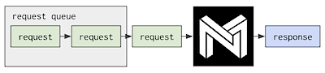
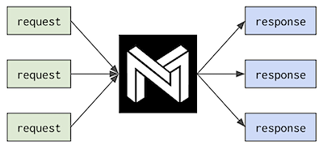

Serial or Concurrent Inferences ¶
Schedulers are special system software which handle the distribution of work across cores in parallel computation. The goal of a good scheduler is to ensure that while work is available, cores aren’t sitting idle. On the contrary, as long as parallel tasks are available, all cores should be kept busy.
In most use cases, the default scheduler is the preferred choice when running inferences with the DeepSparse Engine. It’s highly optimized for minimum per-request latency, using all of the system’s resources provided to it on every request it gets. Often, particularly when working with large batch sizes, the scheduler is able to distribute the workload of a single request across as many cores as it’s provided.

Single stream scheduling; requests execute serially by default
However, there are circumstances in which more cores does not imply better performance. If the computation can’t be divided up to produce enough parallelism (while maximizing use of the CPU cache), then adding more cores simply adds more compute power with little to apply it to.
An alternative, “multi-stream” scheduler is provided with the software. In cases where parallelism is low, sending multiple requests simultaneously can more adequately saturate the available cores. In other words, if speedup can’t be achieved by adding more cores, then perhaps speedup can be achieved by adding more work.
If increasing core count doesn’t decrease latency, that’s a strong indicator that parallelism is low in your particular model/batch-size combination. It may be that total throughput can be increased by making more requests simultaneously. Using the deepsparse.engine.Scheduler API , the multi-stream scheduler can be selected, and requests made by multiple Python threads will be handled concurrently.

Multi-stream scheduling; requests execute in parallel and may utilize hardware resources better
Whereas the default scheduler will queue up requests made simultaneously and handle them serially, the multi-stream scheduler maintains a set of dropboxes where requests may be deposited and the requesting threads can wait. These dropboxes allow workers to find work from multiple sources when work from a single source would otherwise be scarce, maximizing throughput. When a request is complete, the requesting thread is awakened and returns the results to the caller.
The most common use cases for the multi-stream scheduler are where parallelism is low with respect to core count, and where requests need to be made asynchronously without time to batch them. Implementing a model server may fit such a scenario and be ideal for using multi-stream scheduling.
Depending on your engine execution strategy, enable one of these options by running:
engine = compile_model(model_path, batch_size, num_cores, num_sockets, "single_stream")
or
engine = compile_model(model_path, batch_size, num_cores, num_sockets, "multi_stream")
or pass in the enum value directly, since
"multi_stream"
==
Scheduler.multi_stream
By default, the scheduler will map to a single stream.